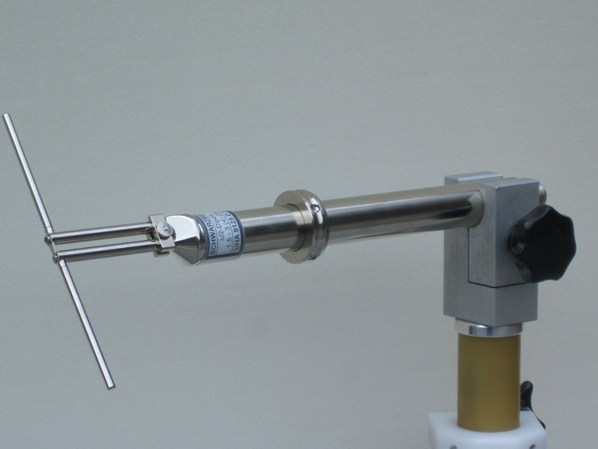
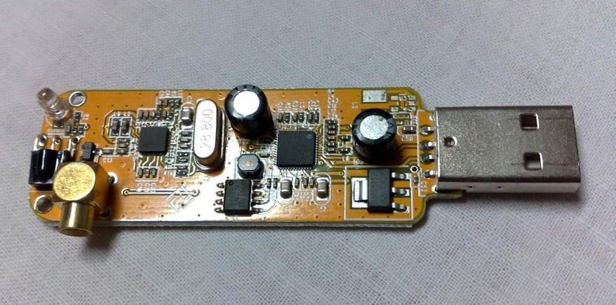

Build and compare an indoor receive antenna
Make a simple FM broadcast dipole and compare it against the receiver’s supplied antenna. Use a repeatable signal and record how orientation and indoor placement change the result.
Calculate and assemble a dipole

Photo by Schwarzbeck Mess-Elektronik. Original photo · CC BY-SA 3.0.

Choose a public FM broadcast station that you already receive. You need an SDR receiver covering that station, its supplied antenna, suitable coax or an adapter to an insulated two-terminal feed point, two lengths of insulated wire and a non-conductive support. Turn off any receiver bias-tee DC output before connecting the antenna. Keep the wires indoors and away from mains wiring and outlets.
Size the legs. Use λ ≈ 300/fMHz metres. For 100 MHz, start with two legs near 0.75 m each. Keep notes on the exposed electrical lengths and layout. ARRL dipole construction examples.
Connect at the centre. Disconnect the feed from the receiver. Use the insulated junction to connect one leg to coax centre and the other to shield. Stretch the legs in opposite directions. Keep them electrically separate. Use the meter to verify centre-to-its-wire, shield-to-its-wire and no short between them on this passive assembly before reconnecting.
Set the receiver. Use WFM for broadcast FM and verify the signal against the receiver’s supplied antenna. Turn off automatic RF gain where possible and record manual gain, bandwidth, sample rate and FFT settings. Airspy’s illustrated SDR setup guide.
Compare one variable at a time

Photo by Dsimic. Original photo · CC BY-SA 4.0.
.jpg){kind=link}
Watch on YouTube · nanoVNA - Measuring Antenna & Coax Characteristics (Revised Feb 16, 2024) · Gregg Messenger - VE6WO
Watch the calibration and repeat measurement at the same reference plane. Apply the same care to your comparison of indoor antenna positions.
Measure the supplied antenna, then the dipole at the same height and location, and finally the supplied antenna again. On each run, note an approximate station level and adjacent clear noise-floor level using identical display settings. The difference is a comparative indicator. Record any audio dropouts. Repeat with the dipole rotated by 90° about its feed point, then move it about a quarter wavelength indoors and repeat. Keep the cable routing as consistent as possible.
If many stations distort together or the floor rises sharply, reduce receiver gain and rerun the comparison. If the two baseline trials differ substantially, repeat when conditions are steadier. If you own an analyser, practise calibrated S11 first with a known 50 Ω termination and an open on a disconnected bench fixture. Keep the reception comparison as a separate measurement.
T10 explains wavelength and polarisation. T32 connects the wire length, feed line, reflection and signal level. T16 covers decibels and noise.